How redesigning OKX On-chain Earn's subscription journey led to 52% better conversion rates by prioritizing familiarity and improved information hierarchy.
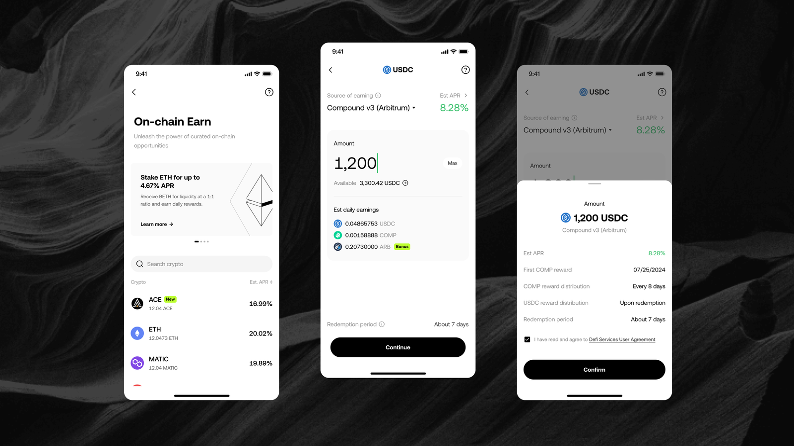
As the product line expands, 40+ products were listed to users all at once without a structure that helps them get started. Different products also come with different sets of rules, such as reward payment schedules, fixed or flexible terms, and withdrawal timeframes. The subscription page has become crowded with all this information, making it overwhelming and confusing for users to understand.
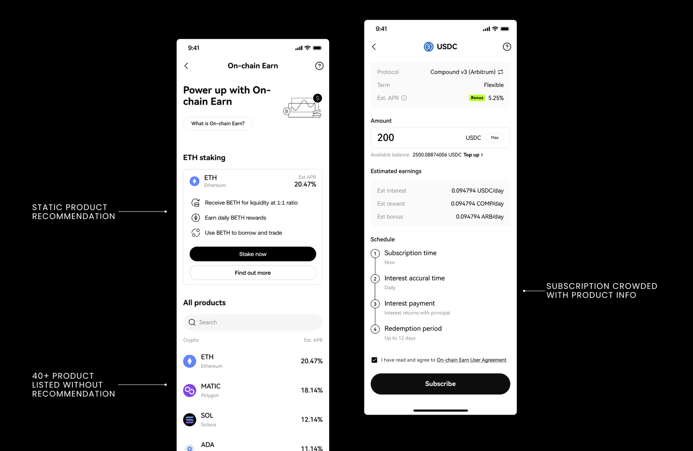
We took a phased approach to improve the overall experience.
Improve product discovery by optimizing the landing page to help users quickly find products that interest them.
Reduce cognitive load by making product information more digestible and ensuring critical details — like source of earning, reward distribution frequency, and redemption time — are presented more effectively.
To better understand users' thoughts and behaviours, we turned to interaction data and found some interesting insights.
We observed users' high motivation to explore the landing page independently, as shown by their frequent navigation between available pages before eventually dropping off.
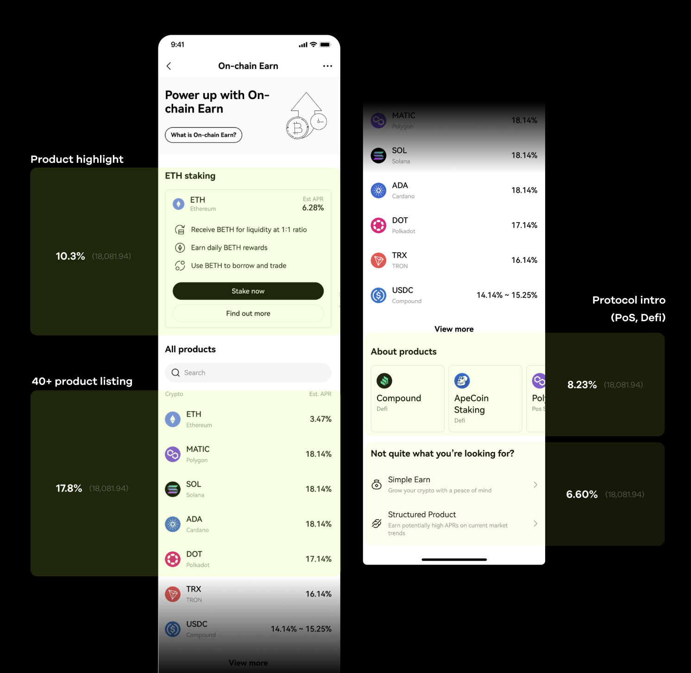
Users showed a higher and faster subscription rate when entering from the asset page, which displays their existing holdings. Other pages that clearly showed users' current assets also led to better conversion rates. This demonstrates that users' existing holdings are more influential than interest rates for product recommendations.
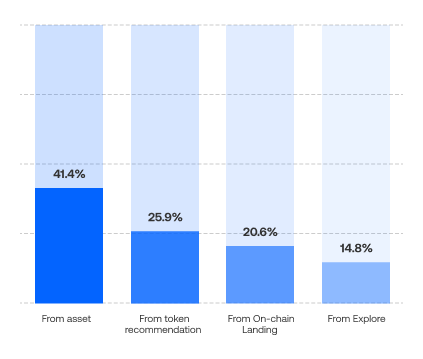
How might we help users discover relevant products more efficiently by leveraging their familiarity with existing assets, while simplifying the exploration journey?
We brainstormed ways to restructure products and display formats to capture users' interest, exploring categories like "staking"/"DeFi" and common labels like "popular" and "new." However, these categorizations felt either like forced education or irrelevant to users.
Based on our data findings, we shifted our approach to prioritize showing tokens users already own instead of highlighting high APR rates. We streamlined the experience by removing unnecessary education and excessive filtering, focusing instead on familiar products in users' existing portfolios.
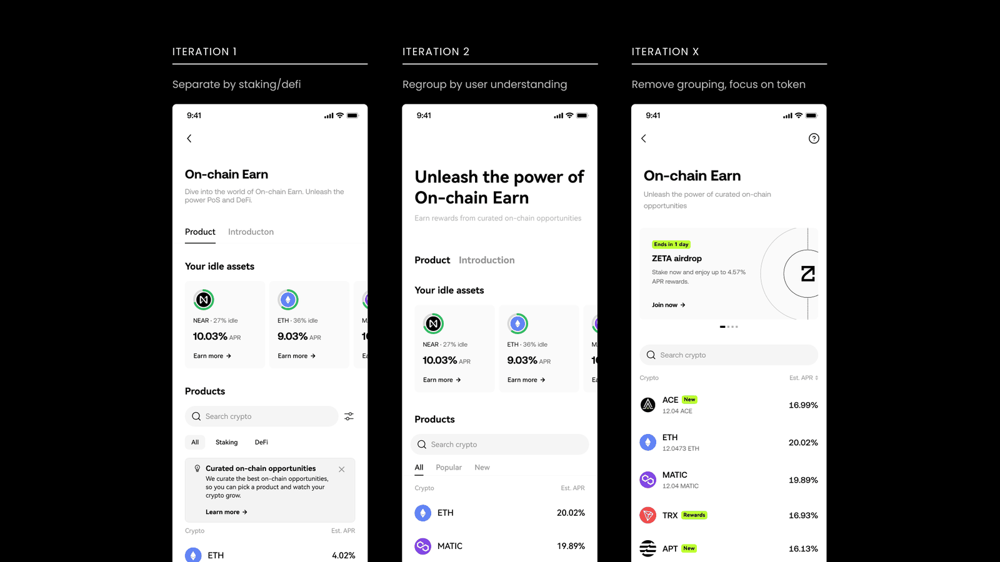
To build shared understanding and goals, we held an alignment and prioritization workshop where we grouped 100+ customer service feedback by theme and ranked issues by importance and urgency.
This focused approach helped us tackle our top priorities and reduced iteration rounds by 40% compared to previous projects.
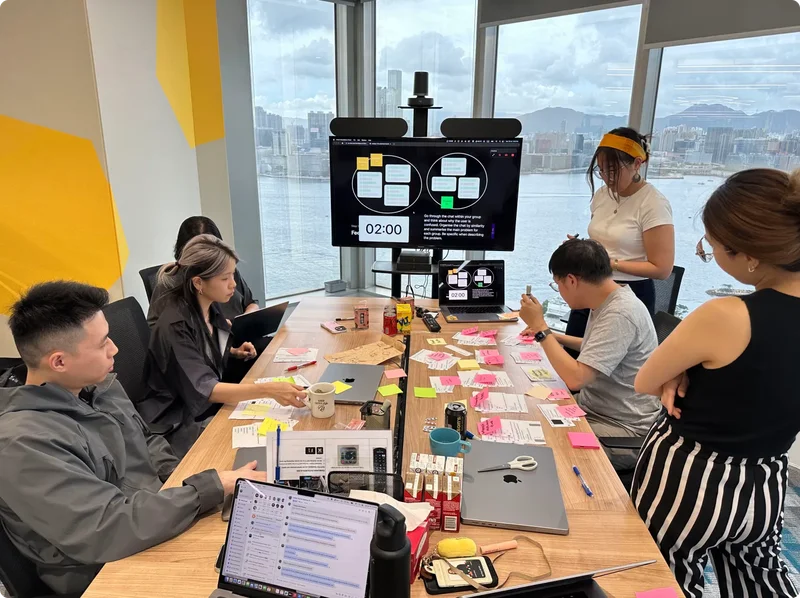
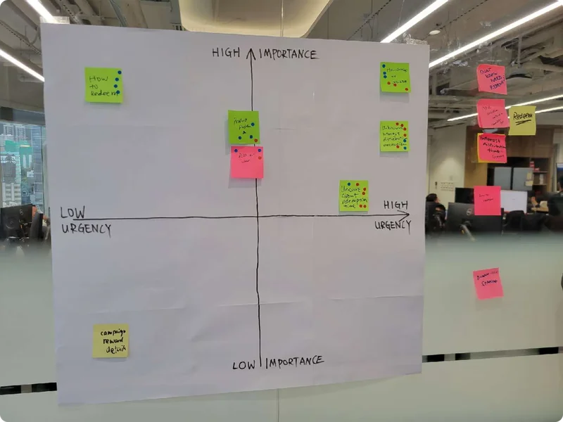
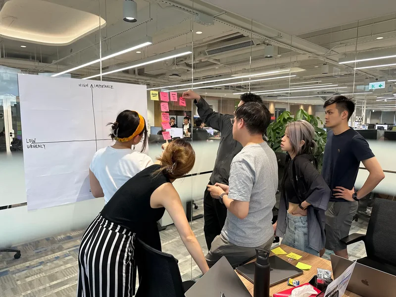
Though all information was present in the user journey, customers struggled to identify key product features like earning sources, reward schedules, and redemption periods. These crucial details were hidden within dense paragraphs instead of being highlighted effectively.
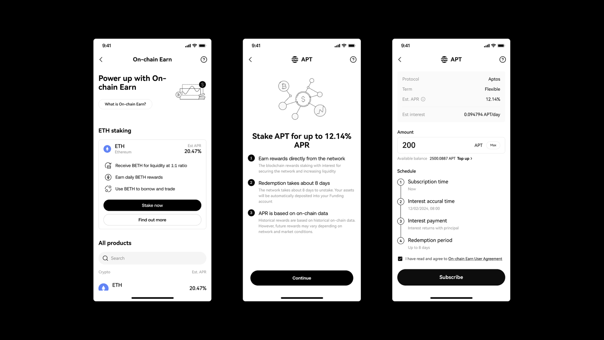
How might we transform dense product information into easily digestible formats that capture users' attention?
The workshop helped us identify key information that users frequently missed, leading to customer complaints. These critical details needed to be clearly visible throughout the subscription journey:
Working with stakeholders, we explored various approaches to determine the optimal placement for each piece of information.
Instead of overwhelming users with a wall of text, we removed the pre-subscription education page and encouraged them to type and visualize their estimated earnings.
We strategically placed the information based on decision-making priority: redemption period was placed near the CTA button since it's crucial for decision-making, especially for users concerned about liquidity, while less critical information like reward frequency was moved to the confirmation page as supplementary information.
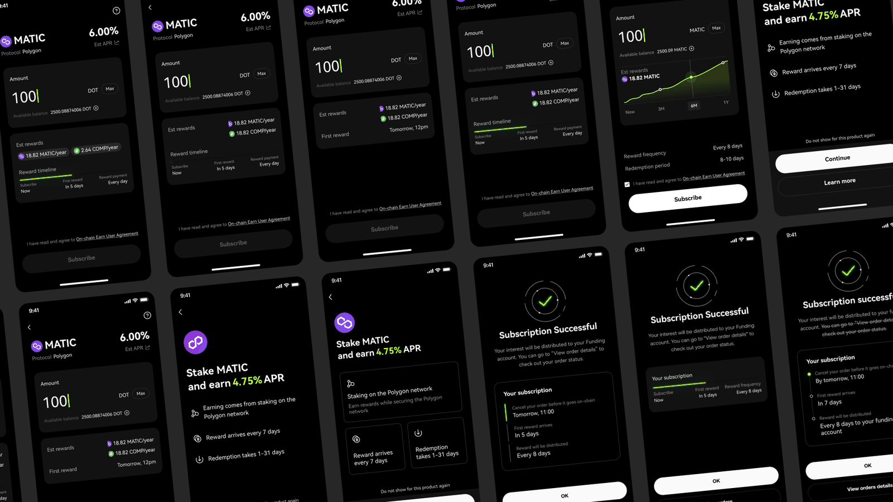
This approach transformed dense information into a more digestible format by presenting the right information at the right time in the user journey, rather than overwhelming users with everything at once.
We simplified and improved the visual hierarchy of the help center page to make it more scannable. Clear section headers with large, bold typography create distinct content blocks, and semi-bold typography highlights key information. Bulleted timelines with ample spacing help break down complex information about token distribution and rewards.
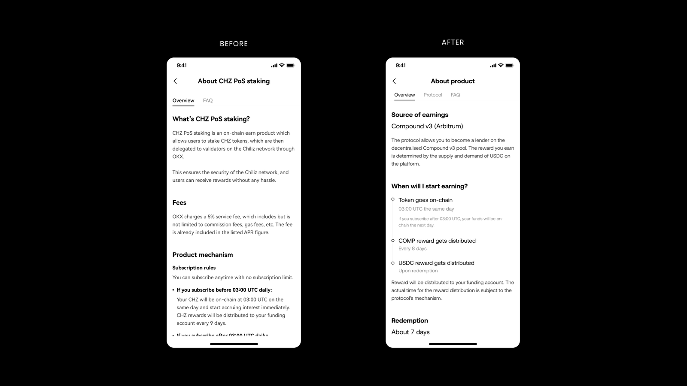
Together with the content designers, we re-evaluated and replaced DeFi jargon with easy-to-understand terms:
The landing page optimization in Phase One combined with the information clarity improvements in Phase Two enhanced overall user engagement and subscription completion rates.
Both phases delivered significant improvements to our conversion metrics.